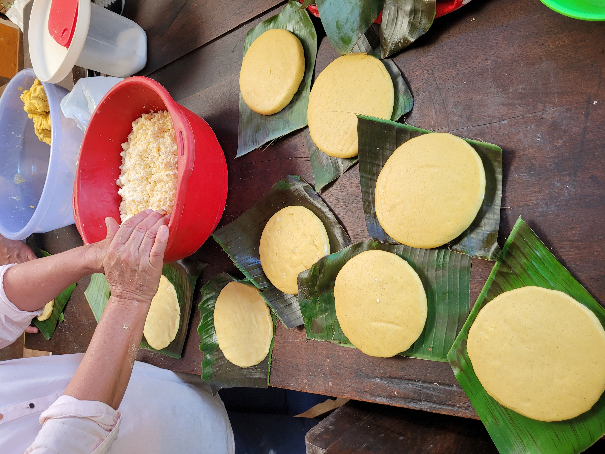

Two published recipes name the people and communities behind the method. Their dates tell us when the preparations were documented; neither publication establishes an unchanged recipe from before 1500.
How to read these cardsIngredients and steps are limited to what the cited records actually provide. An unspecified quantity or cooking time stays unspecified.

Maize cakes being shaped, illustrative only: neither recipe source identifies this batch. Photograph by Intimankiller [6].
01 / ZenúCommunity publication · 2008
Arepa de maíz blanco asada
Caribbean Colombia. The Zenú organization RECAR recorded this recipe in a 2001 regional maize-use collection; Semillas criollas del pueblo Zenú republished the table in 2008. It is not attributed to an individual cook or claimed as exclusive to one community. [1][2]
Ingredients recorded
White maize
Salt
Amounts are not given.
Method recorded
Pound the maize.
Cook it, then grind it.
Knead the dough and add salt.
Roast the arepa.
Extent of the record
The original gives this sequence without soak time, grain-to-water ratio, cake dimensions, heat level, or roasting duration. “Pound” translates pilar; the recipe does not specify an alkaline treatment.
Alta Guajira, Colombia. SENA’s culinary field publication credits Carmen Dayana Deluques Iguarán, who identifies herself as Wayúu and names her Epieyú clan. [3][4]
Ingredients recorded
125 g purple highland maize
60 g criollo or coastal cheese
Salt and sugar to taste
Hot water for the rest
The water amount is not given.
Method recorded
Grind the maize.
Add hot water; rest 20 minutes and remove the bran.
Grind again to make the dough.
Add cheese, salt, and sugar.
Form arepas and roast.
Extent of the record
The book provides ingredient weights and a resting time, but no roasting duration or temperature. Cheese and sugar belong to this documented contemporary version; the source does not date this exact formula to before contact.
A 2004 Venezuelan educational guide developed with Warao educators and elders describes dry maize pounded to flour and mixed with water to make dough for a bollo or arepa. It places maize among foods of “nontraditional” Warao communities. The guide does not give shaping or cooking steps, so this is a documented preparation rather than a complete recipe. [5]
What these sources can establish
They document Indigenous knowledge and cooking at the time each account was made. For evidence about earlier maize use and griddled cakes, follow the separate crop and corn-cake histories. The whole-maize cake is an explicitly modern reconstruction, not a third attested Indigenous recipe.
Trace the account
Sources & credits
Original publications and institutional records behind each preparation; the links also show where the documented method stops.
Community publication. The recipe table gives white maize, salt, and the recorded sequence; its note on p. 47 credits RECAR’s 2001 regional maize-use booklet.